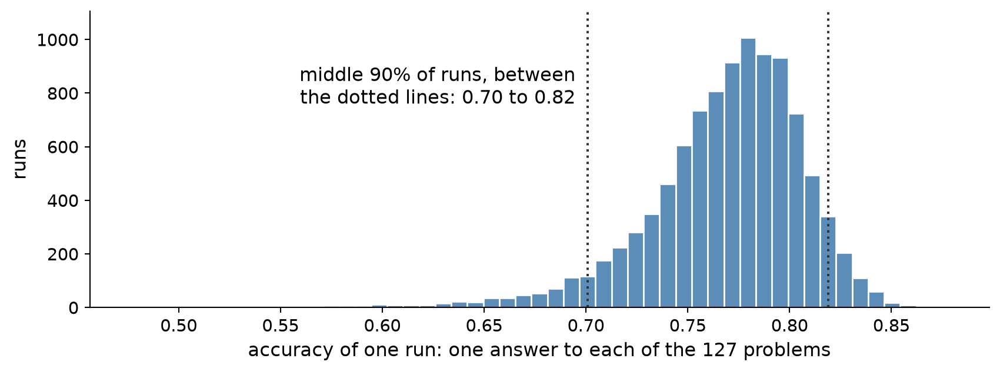
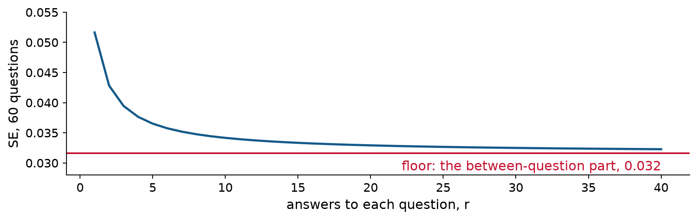
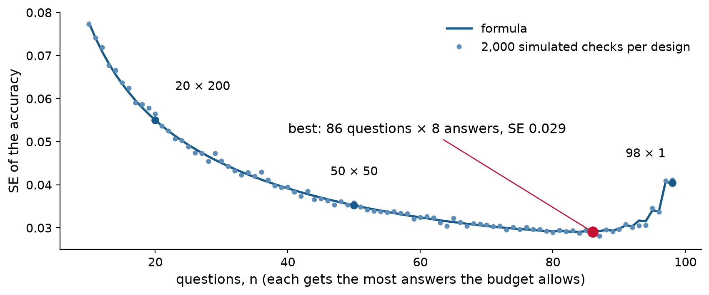

How many questions, how many answers to each, and what to randomize

| Weeks | The question | The design |
|---|---|---|
| 4 and 5 | How precise is a score? Which model is better? | given; we analyzed it |
| 9 and 10 | Does the score carry over to the client? | given; the client’s cases |
| 11 | How should the evaluation be run? | ours: questions, answers, randomization |
| 12 | Can we trust the judge that grades answers? | ours: the judge and its prompt |
Fisher (1938): “He can perhaps say what the experiment died of.”
\operatorname{Var}(Y)=\underbrace{\tau^2}_{\text{between passages}}+\underbrace{\sigma^2}_{\text{within a passage}}
\rho=\frac{\tau^2}{\tau^2+\sigma^2},\qquad \text{design effect}=1+(m-1)\rho
Thursday’s lab: Questions 1 to 3 on real data.
P(\text{next token}=j)=\frac{e^{z_j/T}}{\sum_k e^{z_k/T}}
| Temperature | Token A | Token B | Token C |
|---|---|---|---|
| T=0.25 | 0.98 | 0.02 | 0.00 |
| T=0.6 | 0.82 | 0.15 | 0.03 |
| T=1 | 0.67 | 0.25 | 0.09 |
| T=2 | 0.51 | 0.31 | 0.19 |
* The simplest version. Real systems first trim the candidates, for example to the top k tokens (Hugging Face’s default is k=50) or to the most likely tokens that make up probability p (“top-p”).
C_{ij}=1\ \text{if answer } j \text{ to question } i \text{ is right}
P(C_{ij}=1\mid\text{question } i)=p_i,\qquad \theta=E[p_i]
One question has p_i=0.6.
\begin{aligned} P(\text{2 answers disagree}\mid i)&=p_i(1-p_i)+(1-p_i)\,p_i=2p_i(1-p_i)\\ P(\ge1\text{ of }k\text{ right}\mid i)&=1-P(k\text{ wrong in a row}\mid i)=1-(1-p_i)^k\\ P(\ge2\text{ of }3\text{ right}\mid i)&=\tbinom{3}{2}\,p_i^2(1-p_i)+p_i^3 \end{aligned}
P(\text{event})=E\bigl[P(\text{event}\mid i)\bigr]\qquad\text{(law of total expectation)}
| Question | p_i | Two answers disagree | At least 1 of 3 right | Majority of 3 right |
|---|---|---|---|---|
| How do I report a pothole? | 1.0 | 0.00 | 1.000 | 1.000 |
| When is my trash pickup? | 0.9 | 0.18 | 0.999 | 0.972 |
| Where do I park in a snow emergency? | 0.6 | 0.48 | 0.936 | 0.648 |
| Who fixes a sinkhole? | 0.3 | 0.42 | 0.657 | 0.216 |
| Average | 0.70 | 0.27 | 0.898 | 0.709 |
\text{disagreement}=2\sigma^2=2\,(1-\rho)\,\theta(1-\theta)=0.27
\rho=\operatorname{corr}(C_{i1},C_{i2})=\frac{\tau^2}{\tau^2+\sigma^2}=0.36
| How the answers are used | The estimand | Chatbot |
|---|---|---|
| A resident asks once and reads the answer | accuracy, \theta=E[p_i] | 0.70 |
| A resident asks the same question twice | chance the two answers disagree | 0.27 |
| Staff read 3 drafts and send one that is right | chance at least 1 of 3 is right | 0.90 |
| The app shows the most common of 3 answers | chance the majority of 3 is right | 0.71 |
| Statistics | Machine learning |
|---|---|
| \theta, the accuracy of one sampled answer | pass@1 |
| the chance that at least one of k answers is right | pass@k |
| the most common of k answers | majority voting, self-consistency |
| a question’s own accuracy, p_i | per-item accuracy |
| variation between runs of a benchmark | seed variance, “eval noise” |
A question has p_i=0.4.
\hat\theta=\frac{1}{nr}\sum_{i=1}^{n}\sum_{j=1}^{r}C_{ij}=\frac{1}{n}\sum_{i=1}^{n}\bar C_i,\qquad \bar C_i=\frac{1}{r}\sum_{j=1}^{r}C_{ij}
\begin{aligned} \operatorname{Var}(\hat\theta)&=\frac{1}{n}\operatorname{Var}(\bar C_i)\qquad\text{(independent questions)}\\ &=\frac{1}{n}\Bigl(\operatorname{Var}\bigl(E[\bar C_i\mid i]\bigr)+E\bigl[\operatorname{Var}(\bar C_i\mid i)\bigr]\Bigr)\qquad\text{(total variance)}\\ &=\frac{1}{n}\Bigl(\operatorname{Var}(p_i)+E\Bigl[\frac{p_i(1-p_i)}{r}\Bigr]\Bigr)\qquad\text{(conditional moments)}\\ &=\frac{\tau^2}{n}+\frac{\sigma^2}{n\,r} \end{aligned}
\frac{\tau^2}{n}+\frac{\sigma^2}{n\,r}=\frac{\theta(1-\theta)}{n\,r}\,\bigl[1+(r-1)\rho\bigr]
n_{\text{eff}}=\frac{nr}{1+(r-1)\rho}=\frac{600}{4.375}=137
| Design | Answers | SE |
|---|---|---|
| 60 questions × 1 answer | 60 | 0.052 |
| 60 questions × 10 answers | 600 | 0.034 |
| 137 questions × 1 answer | 137 | 0.034 |
| 600 questions × 1 answer | 600 | 0.016 |
nr=B\quad\Longrightarrow\quad\operatorname{Var}(\hat\theta)=\frac{\tau^2}{n}+\frac{\sigma^2}{B}
| Questions, n | Answers to each, r | SE |
|---|---|---|
| 600 | 1 | 0.016 |
| 200 | 3 | 0.022 |
| 60 | 10 | 0.034 |
| 20 | 30 | 0.056 |

\text{cost}=n\,(c_q+r\,c_a),\qquad \operatorname{Var}(\hat\theta)=\frac{1}{n}\Bigl(\tau^2+\frac{\sigma^2}{r}\Bigr)
\begin{aligned} \operatorname{Var}(\hat\theta)&=\frac{(\tau^2+\sigma^2/r)\,(c_q+r\,c_a)}{C}\qquad\text{(substitute } n=C/(c_q+r\,c_a))\\ &=\frac{\tau^2c_q+\tau^2c_a\,r+\sigma^2c_q/r+\sigma^2c_a}{C}\qquad\text{(multiply out)}\\ 0&=\tau^2c_a-\frac{\sigma^2c_q}{r^2}\qquad\text{(set the derivative in } r \text{ to zero)}\\ r^\ast&=\sqrt{\frac{\sigma^2}{\tau^2}\cdot\frac{c_q}{c_a}}\qquad\text{(Cochran 1977, two-stage sampling)} \end{aligned}

\frac{r_A}{r_B}=\frac{\sigma_A}{\sigma_B}\sqrt{\frac{c_B}{c_A}}
A chatbot has \tau^2=0.04 and \sigma^2=0.16.
Does adding the city’s web page to the prompt help?
| Design term | In the city’s check |
|---|---|
| Unit | a question |
| Treatment | the prompt with the web page, or without it |
| Response | whether each answer is right |
| Block | the question: each one gets both prompts |
| Replication | several answers per question per prompt |
| Randomization | the order of the calls |
Fisher (1935), The Design of Experiments: replication, randomization, and local control (blocking).
\operatorname{Var}(\hat D)=\frac{1}{n}\Bigl(\tau_d^2+\frac{\sigma_{\text{page}}^2}{r}+\frac{\sigma_{\text{none}}^2}{r}\Bigr)
| Question | No page | With page | Gain |
|---|---|---|---|
| How do I report a pothole? | 1.00 | 1.00 | 0.00 |
| When is my trash pickup? | 0.90 | 0.95 | 0.05 |
| Where do I park in a snow emergency? | 0.60 | 0.80 | 0.20 |
| Who fixes a sinkhole? | 0.30 | 0.50 | 0.20 |
| Average | 0.70 | 0.81 | 0.11 |
| Question | p_i | Confounded design | Crossed design |
|---|---|---|---|
| How do I report a pothole? | 1.0 | wording A | A and B |
| When is my trash pickup? | 0.9 | wording A | A and B |
| Where do I park in a snow emergency? | 0.6 | wording B | A and B |
| Who fixes a sinkhole? | 0.3 | wording B | A and B |
Prompt A runs Monday on 200 questions. After a model update, prompt B runs Thursday on the same questions and scores 4 points higher.
| Design term | The city’s check of the web page |
|---|---|
| Unit | questions drawn at random from the bank |
| Treatment | the prompt with the web page, or without it |
| Held constant | temperature 0.7, the model version, the rest of the prompt |
| Block | the question: both prompts on every question |
| Replication | several answers per question per prompt |
| Randomization | call order and seeds, both prompts in one session |
| Response | right or wrong, against the staff’s answer |
| Analysis | the paired difference, resampling questions |
| Decision rule | add the page if the lower bound on the gain is above 0 |
On 85 questions from the city’s bank, with 9 answers to each at temperature 0.7, the chatbot was right on 80% of its answers (95% interval 74% to 86%, resampling questions). Asked twice, it gave one right and one wrong answer about 20% of the time.